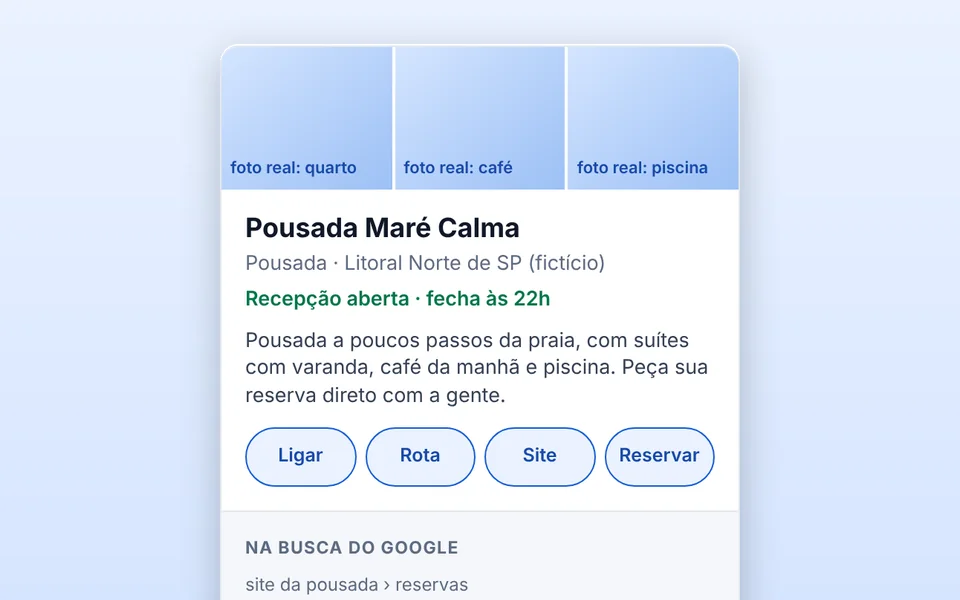

Para clínicas e consultórios
O paciente chama no WhatsApp, a consulta fica marcada.
A gente monta uma atendente de IA que responde no WhatsApp da clínica de dia e de noite, marca e remarca consultas e lembra na véspera quem aceitou receber mensagens. Ela não faz triagem nem dá orientação de saúde.
Sem compromisso. O plano chega no seu WhatsApp em até 2 dias úteis, com o preço por escrito.O que a gente monta pra você.
- WhatsApp com IA
Consulta marcada no WhatsApp
Paciente chama à noite e ninguém responde?
Exemplo · conversas fictíciasSábado, 21h · horário para limpezaRespondido na hora, horário oferecidomarcadaDomingo · convênioPediu o plano para conferirrespondidoSegunda, 7h · não vai conseguir irPassou para amanhã, 9hremarcada- Mostra os horários livres e marca
- Remarca e confirma na véspera
- Ouve áudio e entende o pedido
- Site com IA
Site que tira dúvidas
Convênio, preço e endereço a qualquer hora.
 Demonstração · dados fictícios
Demonstração · dados fictícios- Responde só com as informações da clínica
- Pedido de horário pronto para a recepção
- Chama alguém da equipe quando precisa
- Avaliações
Convite para avaliar
Poucas avaliações, ou só antigas?
 Demonstração · dados fictícios
Demonstração · dados fictícios- Convite depois do atendimento
- Todo cliente recebe o mesmo convite
- O convite sempre leva ao Google
- Google
Certo no Google
Horário, telefone ou fotos errados no Google?

Demonstração · dados fictícios- Perfil com horário e fotos reais
- Botões de ligar, rota e site
- Páginas do site com títulos certos
O plano junta só o que resolve o seu caso. Ver tudo o que a Growlift faz.
O que a atendente resolve no dia a dia.
Sábado, 21h · horário
“Tem horário para limpeza essa semana?”
Tenho terça às 10h ou quarta às 17h. Quer que eu reserve?
Domingo · convênio
“Vocês aceitam o meu convênio?”
Me manda o nome do convênio e do plano que eu confiro na lista da clínica pra você.
Segunda, 7h · remarcar
“Não vou conseguir ir hoje às 9h”
Sem problema! Posso passar para amanhã às 9h ou quinta às 14h. Qual fica melhor?
Não faz: triagem, avaliação de sintomas nem orientação de saúde. Se a pessoa escrever que é uma emergência, ela só mostra o telefone 192 (SAMU) e avisa a equipe.
Conversas de exemplo, com nomes e valores fictícios.
Um degrau por vez.
- 1º
A gente acha a maior dor.
3 perguntas no site ou uma conversa no WhatsApp. O plano chega em até 2 dias úteis, com preço por escrito.
- 2º
Começa pelo que mais trava.
Uma peça de cada vez, e você vê o que foi feito antes de seguir.
- 3º
Depois, o sistema, se fizer sentido.
Cada pedido acompanhado e o relatório do que foi pago. Sem comissão sobre as suas vendas.
O que a gente não promete.
- ×Primeiro lugar no Google.Ninguém pode garantir. A gente deixa o perfil completo e correto, e não controla a posição.
- ×Número de vendas ou de clientes.Depende do seu negócio. O que a gente mostra é o que aconteceu, pedido por pedido.
- ×Mensagem para quem não pediu.O sistema só escreve para quem autorizou, e sempre tem a opção SAIR.
- ×Avaliação comprada.Todo cliente recebe o mesmo convite, sem desconto nem brinde, porque as regras do Google proíbem pagar ou premiar por avaliação.
Qual é a maior dor do seu negócio hoje?
3 perguntas rápidas, quase tudo com um toque. Em até 2 dias úteis chega no seu WhatsApp o que a gente faria no seu lugar, por onde começar e quanto custa.

 Quem lê é gente. Lucas e Antônio leem cada diagnóstico e montam o plano.
Quem lê é gente. Lucas e Antônio leem cada diagnóstico e montam o plano.
Recebemos!
Em até 2 dias úteis você recebe no WhatsApp o diagnóstico e o plano para o seu negócio. Quem vai ler e responder é o Lucas ou o Antônio.
Dúvidas.
A IA marca consulta sozinha?
Sim, nos horários livres que a clínica definir. Ela mostra as opções, o paciente escolhe e a consulta entra na agenda. Um dia antes, ela manda o lembrete para o paciente que aceitou receber mensagens confirmar.
Ela responde dúvidas de saúde?
Não. Ela não faz triagem nem dá orientação de saúde. Responde só com as informações da clínica, como preços, horários e convênios, e chama alguém da equipe quando precisa. Se a pessoa disser que é uma emergência, ela mostra o 192 (SAMU) e avisa a equipe, sem avaliar o caso.
E se o paciente mandar áudio?
Ela ouve o áudio, entende o pedido e responde por escrito, como nos exemplos desta página.
Funciona com a agenda que a clínica já usa?
Depende do sistema. Conte no diagnóstico qual você usa: o plano diz se dá para ligar ou se a agenda fica no nosso sistema.
O diagnóstico é pago?
Não. O diagnóstico e o plano são grátis e sem compromisso. Você só paga se quiser começar.
Quanto custa?
Depende do que o seu negócio precisa. Por isso não tem tabela fixa: o preço vem no plano, por escrito, depois do diagnóstico, e só começa se você aprovar.
Vocês mexem no meu perfil do Google?
Se fizer parte do plano, sim: a gente arruma categoria, horário, fotos e link. O perfil continua no seu nome; a gente recebe acesso de gerente, e você pode tirar esse acesso quando quiser. Todo cliente recebe o mesmo convite para avaliar, sem desconto nem brinde em troca.
Vocês garantem mais clientes ou o 1º lugar no Google?
Não. Ninguém pode garantir posição no Google nem número de vendas. O que a gente garante é o combinado por escrito, e o sistema mostra o que aconteceu com cada pedido.
Funciona para o meu ramo?
Se você atende clientes na sua cidade, recebe pedidos de orçamento ou de reserva e conversa pelo WhatsApp, quase sempre tem algo para melhorar: pousadas, restaurantes, serviços como ar-condicionado e limpeza, energia solar, clínicas e lojas. O cardápio em 3D, ainda em teste, é para quem vende comida.
Vocês atendem fora de São Paulo?
Sim. A gente atende negócios do Brasil inteiro. É tudo a distância, com a conversa pelo WhatsApp.
Como a atendente de IA conversa?
Ela fala do jeito do seu negócio, pode ter um nome e usa só as informações que você passou. Se o cliente perguntar sério se é uma pessoa, ela responde que é a assistente do negócio e oferece chamar alguém da equipe. Quando não sabe a resposta, ela chama você.
Quem paga o WhatsApp oficial?
A conta do WhatsApp oficial é do seu negócio, com o seu número. A Meta cobra algumas mensagens direto de você, conforme a tabela dela na época. A gente mostra a estimativa no plano.
Tem fidelidade? Posso desistir?
As condições vêm escritas na proposta e no contrato, antes de começar. E você sempre tem 7 dias para desistir sem multa, a contar da assinatura do contrato.
Vocês cobram comissão sobre as vendas?
Não. A Growlift cobra o valor combinado no plano, sem comissão sobre os seus pedidos ou serviços. A Meta cobra à parte, direto do seu negócio, as mensagens do WhatsApp oficial.
E se eu já tiver site ou sistema?
Melhor ainda: a gente trabalha junto com o que você já usa. Conte no diagnóstico qual é, e o plano parte dele.